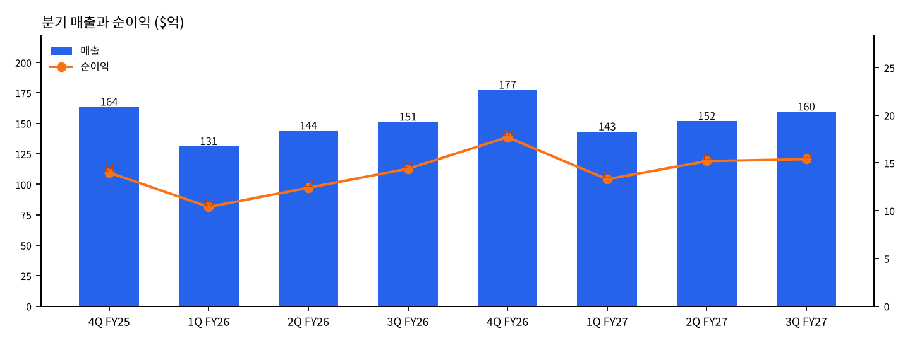
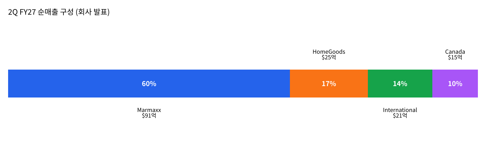
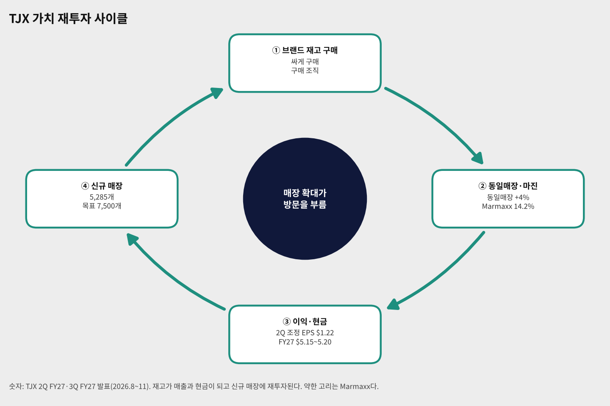

TJX는 브랜드 상품을 싸게 사 와서 싸게 파는 오프프라이스 소매업체다. 매장 수가 늘고 방문객이 늘수록 매출이 커진다.
| 항목 | 내용 |
|---|---|
| 종목 | TJX Companies (TJX) · NYSE · 소비재(오프프라이스 소매) · 매사추세츠 프레이밍엄 |
| 최근 분기(2Q FY27) | 순매출 $151.8억, 조정 EPS $1.22 |
| 핵심 사업 | Marmaxx, HomeGoods, Canada, International |
| 직원 수 | 약 377,000명(트레이딩뷰) |
| 멀티플 | PER·PEG·P/S는 08~10 항목 표 참조 |
| 직책 | 인물 | 역할·특징 |
|---|---|---|
| 회장·CEO | 어니 헤르만(Ernie Herrman) | CEO |
| CFO | (확인 필요) | 회사 공개 자료 기준 확인 필요 |
경영 스타일: 가치 소매. 재고를 빠르게 돌리고 가격 대비 가치를 내세운다.
전 세계 납품업체에서 브랜드 재고를 싸게 사 오는 구매 조직이 경쟁력이다.
매장 수를 7,500개까지 늘리는 장기 목표를 가지고 있다.
다음 실적발표는 세 가지 질문에 답하는 자리다.
1. Marmaxx 동일매장이 회복하나?
2. FY27 가이던스가 상향되나?
3. 관세 환급 효과를 어떻게 처리하나?
한 줄 판정 규칙: 첫 질문(Marmaxx 동일매장)이 회복하면 약한 고리가 풀린다.
일정: 4Q FY27 실적은 2027.02.24 발표 예정이다. 3Q FY27 가이던스 상향 여부는 확인 필요.
| 분기 | 매출 | 순이익 | EPS | 조정 EPS | 특이 사항 |
|---|---|---|---|---|---|
| 4Q FY25 | $163.5억 | $14.0억 | 1.23 | 1.23 | |
| 1Q FY26 | $131.1억 | $10.4억 | 0.92 | 0.92 | |
| 2Q FY26 | $144.0억 | $12.4억 | 1.10 | 1.10 | |
| 3Q FY26 | $151.2억 | $14.4억 | 1.28 | 1.28 | |
| 4Q FY26 | $177.4억 | $17.7억 | 1.58 | 1.43 | |
| 1Q FY27 | $143.2억 | $13.3억 | 1.19 | 1.19 | |
| 2Q FY27 | $151.8억 | $15.2억 | 1.36 | 1.22 | 관세 환급 포함 |
| 3Q FY27 | $159.5억 | $15.4억 | 1.39 | 1.34 | 동일매장 +4%, 계획 상회 |
TJX 회계연도는 2월에 시작한다(3Q FY27은 2026.10월 종료, 11.18 발표). 3Q FY27 상세 수치는 확인되는 범위만 썼다. 매출은 트레이딩뷰 스캐너의 분기 총매출이라 회사가 발표한 순매출과 다를 수 있다. 매출·순이익·EPS(GAAP 희석)는 트레이딩뷰 스캐너, 조정 EPS는 트레이딩뷰 실적 페이지의 Reported 값이다. 분기 정렬은 오래된 분기→최신이다.

흐름 요약: 최근 분기 매출은 $159.5억로 전년 동기 $151.2억 대비 +5.5%, 순이익은 $15.4억(전년 $14.4억)다. 최근 4분기 GAAP EPS는 $5.52, 조정 EPS는 $5.18다.
| 부문 | 내용 | 2Q FY27 순매출 | 비고 |
|---|---|---|---|
| Marmaxx | T.J. Maxx·Marshalls | $91.1억 | 조정 마진 14.2% |
| HomeGoods | 홈 인테리어 | $25.1억 | +10%, 마진 12.4% |
| International | 유럽·호주 | $20.9억 | |
| Canada | 캐나다 | $14.7억 |

Marmaxx가 60%를 차지한다. HomeGoods 마진이 가장 낮지만 성장이 빠르다.
TJX는 가치 있는 브랜드 상품을 낮은 가격에 제공하는 것을 목표로 한다.
| 축 | 내용 |
|---|---|
| 매장 | 5,285개 |
| 목표 | 7,500개 |
| 수익 | FY27 조정 EPS $5.15~5.20 |

| 이동평균 | 값 | 종가 대비 | 위치 |
|---|---|---|---|
| 5일선 | $134.32 | +4.5% | 종가 위 |
| 20일선 | $138.84 | +1.1% | 종가 위 |
| 50일선 | $136.40 | +2.9% | 종가 위 |
| 100일선 | $142.71 | -1.7% | 종가 아래 |
| 200일선 | $150.21 | -6.6% | 종가 아래 |
52주 고가 $170.00(2026-06-11)·저가 $122.78(2026-09-16) 범위에서 종가 $140.30는 5일선, 20일선, 50일선을 웃돌고 100일선, 200일선은 밑돈다.
| 규칙 | 기준 | 현재 값 | 신호 |
|---|---|---|---|
| 장기 추세 필터 | 종가 vs 200일선 | $140.30 < $150.21 | 매도 |
| 중장기 교차 | 50일선 vs 200일선 | $136.40 < $150.21 | 매도 |
| 단기 교차 | 20일선 vs 50일선 | $138.84 > $136.40 | 매수 |
| 돈키언 채널 | 55일 고가 $148.57 / 저가 $122.78 | 중간값 $135.68 위 | 매수 |
| 1개월 모멘텀 | 21거래일 수익률 | -4.6% (기준 $146.99) | 매도 |
| 3개월 모멘텀 | 63거래일 수익률 | -0.3% (기준 $140.69) | 매도 |
| 6개월 모멘텀 | 126거래일 수익률 | -11.9% (기준 $159.21) | 매도 |
| 12개월 모멘텀 | 252거래일 수익률 | -3.4% (기준 $145.18) | 매도 |
| 종합 (8개 평균) | -0.50 | 매도 |
해석: 매수 신호 2개(단기 교차, 돈키언 채널), 매도 신호 6개(장기 추세 필터, 중장기 교차, 1개월 모멘텀, 3개월 모멘텀, 6개월 모멘텀, 12개월 모멘텀). CTA 점수 -0.50(매도). 14일 ATR $4.88 (3.5%), 52주 고가 $170.00 · 저가 $122.78.
| 가격 | 기준 | 무엇이 바뀌나 |
|---|---|---|
| $159.21 | 6개월 모멘텀 기준가 | 종가가 이 가격 위면 6개월 신호 매수 |
| $150.21 | 200일선 | 종가가 이 선 위/아래인지로 장기 추세 신호가 바뀜 |
| $148.57 | 55일 고가 | 돌파 시 채널 상단 갱신 |
| $146.99 | 1개월 모멘텀 기준가 | 종가가 이 가격 위면 1개월 신호 매수 |
| $145.18 | 12개월 모멘텀 기준가 | 종가가 이 가격 위면 12개월 신호 매수 |
| $140.69 | 3개월 모멘텀 기준가 | 종가가 이 가격 위면 3개월 신호 매수 |
| $135.68 | 돈키언 중간값 | 55일 채널 중간값 위/아래로 신호가 바뀜 |
| $122.78 | 55일 저가 | 이탈 시 채널 하단 갱신 |
가격 수준은 신호가 바뀌는 기준선일 뿐 진입·청산 가격 제안이 아니다. 20일/50일 교차는 이동평균 자체가 움직여 단일 가격으로 표시하지 않았다. 일봉·주봉은 종가 기준 직접 계산(고저 데이터 미사용)이다.
| 악재 요인 | 내용 | 강도 |
|---|---|---|
| 관세 | 관세 환급이 일시적 이익을 만들었음 | 중간 |
| Marmaxx 둔화 | 3Q Marmaxx +2% | 중간 |
| 소비 환경 | 소비자 지출 변화(내 해석) | 참고 |
| 티커 | 회사 | PER(TTM) | PEG | P/S | EPS 성장(YoY) |
|---|---|---|---|---|---|
| TJX | TJX Companies | 27.1배 | 1.89 | 2.44배 | +14% |
| ROST | Ross Stores | 27.5배 | 0.85 | 2.87배 | +31% |
| BURL | Burlington | 22.2배 | 0.67 | 1.23배 | +32% |
| TGT | Target | 15.4배 | 0.48 | 0.67배 | +31% |
| WMT | Walmart | 46.1배 | 11.18 | 1.38배 | +4% |
비교 결론: TJX의 PER 27.1배는 Ross Stores와 비슷하고 Burlington·Target보다 높으며 Walmart보다 낮다. PEG 1.89는 Ross Stores(0.85)·Burlington(0.67)·Target(0.48)보다 높고 Walmart(11.18)보다 낮다.
현금·부채는 트레이딩뷰 스캐너 값이다. 리스 부채가 포함될 수 있다.
| 지표 | 값 | 출처 | 해석 |
|---|---|---|---|
| 현금·단기투자 | $46억 | 트레이딩뷰 스캐너(최근 분기) | |
| 총부채 | $134억 | 트레이딩뷰 스캐너(최근 분기) | |
| 순부채(부채−현금) | $88억 | 내 계산 | 현금 대비 부채 부담 |
| 잉여현금흐름(TTM) | $60억 | 트레이딩뷰 스캐너 | |
| TTM 매출 | $632억 | 트레이딩뷰 스캐너 |
| 기준 | 매출 | P/S | 비고 |
|---|---|---|---|
| 내 계산(종가 ÷ 최근 4분기 매출 합계) | $631.9억 | 2.44배 | 시총은 정렬용 데이터에서만 사용 |
| 동종(트레이딩뷰) | – | ROST 2.87배 · BURL 1.23배 · TGT 0.67배 · WMT 1.38배 | 11.19 |
해석: 잉여현금흐름이 배당과 자사주를 감당한다(내 해석).
EBITDA는 영업활동의 현금 창출력을 보는 지표이고, PEG는 PER을 EPS 성장률로 나눈 값이다. EBITDA·FCF는 트레이딩뷰 TTM 값이다.
| 지표 | 값 | 산출 |
|---|---|---|
| EBITDA(TTM) | $93억 | 트레이딩뷰 스캐너 |
| EBITDA 마진 | 14.7% | EBITDA ÷ TTM 매출(내 계산) |
| FCF 마진 | 9.5% | FCF ÷ TTM 매출(내 계산) |
| PER(GAAP TTM) | 25.4배 | $140.30 ÷ $5.52 |
| PER(조정 TTM) | 27.1배 | $140.30 ÷ $5.18 |
| 방식 | PER | EPS 성장률 | PEG | 판정 |
|---|---|---|---|---|
| 조정 EPS (TTM $5.18) | 27.1배 | +14% ($4.53 → $5.18) | 1.89 | 기준 초과 |
| GAAP EPS (TTM $5.52) | 25.4배 | +22% ($4.53 → $5.52) | 1.16 | 기준 초과 |
판정: 조정 EPS 기준 PEG 1.89 → 1.0 초과 PEG 기준은 1.0 이하 투자 적격, 0.5 이하 적극 매수다. EPS 성장률은 최근 4분기 EPS 합계를 직전 4분기 합계와 비교한 값(내 계산)이고, 일회성 항목이 있으면 조정 EPS 행을 함께 본다.

TJX의 사이클: 싸게 산 재고가 방문객과 마진이 되고 그 현금이 신규 매장에 재투자돼 다음 방문을 부른다.
| 고리 | 현재 숫자·근거 |
|---|---|
| ① 브랜드 재고 구매 | 납품업체 재고 구매(수치는 보고서에 없음) |
| ② 동일매장·마진 | 3Q 동일매장 +4% · Marmaxx 조정 마진 14.2%(2Q) |
| ③ 이익·현금 | 2Q 조정 EPS $1.22 · FY27 가이던스 $5.15~5.20 |
| ④ 신규 매장 | 매장 5,285개 · 장기 목표 7,500개 |
사이클의 특징: 약한 고리는 Marmaxx 동일매장이다(+2%). "(내 해석)"은 보고서 수치가 아닌 해석이다.